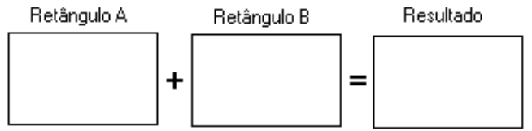

Quem sou eu?
-
Graduando em Ciência da Computação pela Universidade Federal de Alagoas (UFAL)
-
Professor de Inglês e Web Design na Microcamp
-
Densenvolvedor Web (front-end e back-end)
-
Fiz graduação sanduíche pela Australian National University (ANU)
-
Fui estagiário de verão na Commonwealth Scientific and Industrial Research Organisation (CSIRO), agência governamental de pesquisa da Austrália
Conteúdo da aula
- Definições de Lógica
- Lógica de programação?
- Sequência lógica
- Algoritmo
- Programas de computador
- Exercícios
Definições de lógica
Lógica Aristotélica
"conjunto de estudos que visa determinar os processos intelectuais que são as condições gerais do conhecimento verdadeiro"
Todo homem é mortal.
Sócrates é homem.
Logo, Sócrates é mortal.
Definição de lógica
Outras definições
- "é a seqüência coerente, regular e necessária de acontecimentos, de coisas ou fatos" - Dicionário Aurélio
- "é a maneira do raciocínio particular que cabe a um indivíduo ou a um grupo" - Dicionário Aurélio
Definição de lógica
Em resumo
- "Lógica é a ciência que estuda as leis e critérios de validade que regem o pensamento e a demonstração, ou seja, ciência dos princípios formais do raciocínio" - (Manzano, 2000)
Mas...
O que é lógica de programação?
Lógica de programação é a técnica de desenvolver e encadear sequências lógicas de pensamento para atingir um determinado objetivo.
Sequência lógica
"É um conjunto de passos executados até atingir um objetivo ou solução de problema."
Instruções
- Normalmente: conjunto de regras ou normas bem definidas para a realização ou emprego de algo
- Em Informática: são ações elementares a serem executadas em um computador (ex.: adição)
Como se acender uma boca de fogão?
- Pega a caixa de fósforos
- Abre a caixa
- Retira um palito
- Fecha a caixa
- Risca o fósforo na parte indicada na caixa
- Direciona o palito na boca do fogão
- Gira o botão do fogão da boca correspondente
- Apaga o fósforo
Algoritmo
Um algoritmo é uma sequência finita de instruções bem definidas e não ambíguas, cada uma das quais pode ser executada mecanicamente em um período de tempo finito e com uma quantidade de esforço finita.
Por exemplo:
- Operações matemáticas básicas (adição, subtração, multiplicação, divisão)
- Receita de bolo
- Acender uma boca de fogão
- etc.
Como multiplicar dois números?

Algoritmo: multiplicação de dois números
- Escreva o primeiro número no retângulo A
- Escreva o segundo número no retângulo B
- Multiplique o número do retângulo A pelo número do retângulo B e coloque o resultado no retângulo Resultado
O que são programas de computador?
O que são programas de computador?
Programas são algoritmos escritos numa linguagem de programação (JavaScript, PHP, C#, Action Script, entre outras) e que são interpretados e executados por uma máquina, no caso um computador.
Hora de exercitar!